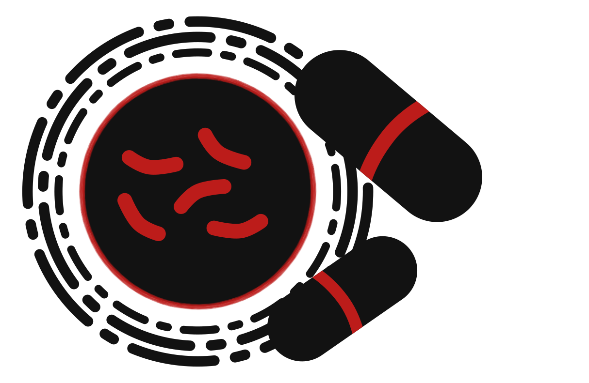

These illegal action will cause many to die and cause the spread of drug resistant tuberculosis, only to save less than 1% of the US's budget.
In 1961, congress created a new agency: the US Agency for International Development
Every year, it supports programs across the world that help end tuberculosis.
But now it is under threat.
UNDER THREAT
As Trump took office in January, his administration swiftly moved to dismantle USAID funding.
In his first week in office, he signed an executive order freezing foreign aid, including USAID and the United States President’s Emergency Plan for AIDS Relief (PEPFAR) for 90 days for the administration to review the agency. But experts questioned the legitimacy of this review.
Later that week, the Secretary of State issued a temporary waiver for life saving treatment, which to our knowledge has has only been sparingly granted to some organizations.
As the weeks progressed, USAID’s website was taken down while thousands of workers were fired, including overseas workers who were working in the field to give care to millions of people around the world.
Recently, the administration has announced that it will permanently shutter 90% of USAID's contracts as USAID workers got their last chance to retrieve their belongings after being fired.
THE SUPER BUG
1%


Suddenly stopping TB treatment is know to cause drug resistant TB, making the person harder and costlier to treat. But, when this happens on a mass scale, like it is right now, it can cause the resistance to spread around the world, threatening people from the US to the Nigeria. These cuts could also cause a “super bug” (resistant to all current drugs) to develop, which would be impossible to treat.
These cuts also are estimated to result in a 28-32% increase in tuberculosis globally, which will set back the centuries long fight against TB. But we can still fight back against these actions.
TAKE ACTION
Recently, the current administration has been restoring some contracts, but not all. This is insanely good news, but there are still millions of dollars not distributed, causing people to die. But what this does show is that we can make a difference. Some of these contracts were restored due to pressure from people like you! Others were restored due to court cases, in which judges went against the current administration, which has levied threats against judges that gave them unfavorable rulings, in part due to support from people like you. But we have to continue to remind our congresspeople, the current administration and people around the world that we still want the money to flow. One of the best ways to do that is to call you congresspeople using the templates below and to spread the world
Countries other than the US have also cut foreign aid funding. Much of the same points laid out above still apply: cutting foreign aid will cost lives. We have made templates for what you can say to your elected officials about these cuts. If you country hasen't cut funding, that is great! But we ask you to ask your elected officials to fill in the gap left by the US and other countries. You can find templates for that below too.